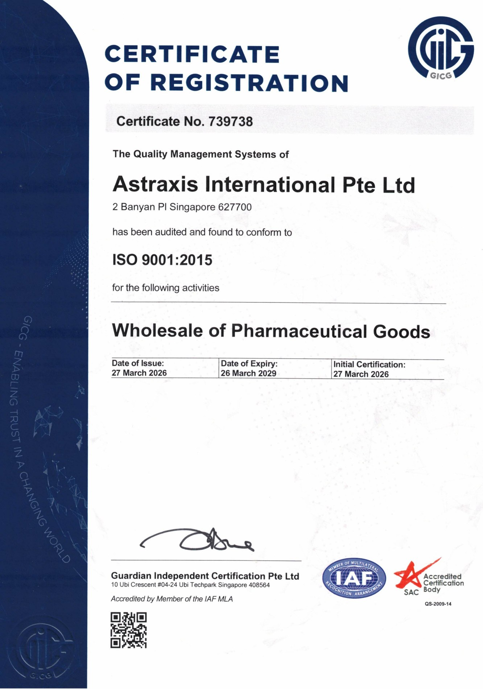
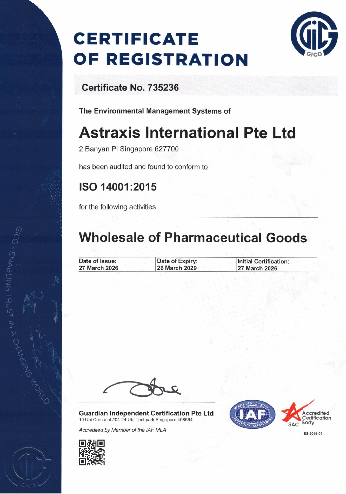
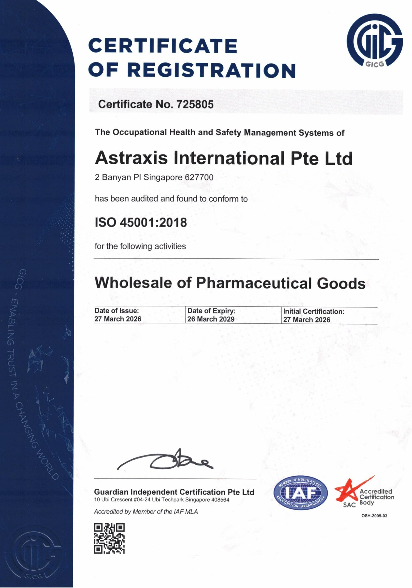
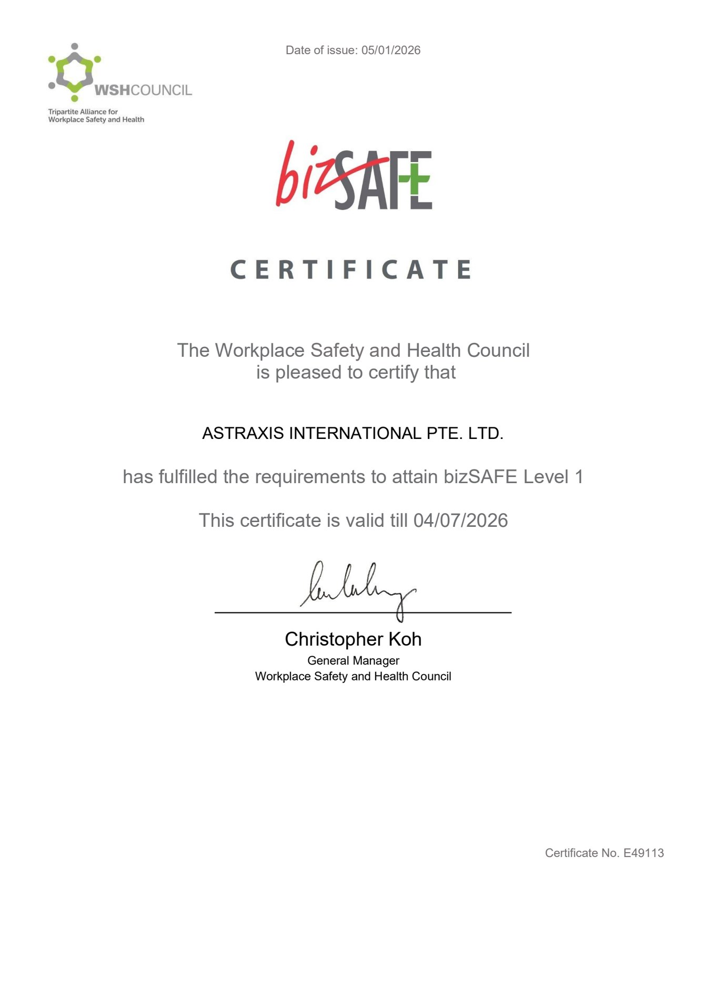

Order Review
Buyer requirements, technical fit, documentation needs, and delivery expectations are clarified before sourcing activity proceeds.
Quality & trust
Astraxis International Pte Ltd maintains a structured QHSE system covering document control, purchasing, supplier evaluation, traceability, handling, storage, delivery, internal audit, nonconformance, corrective action, and risk management. The team’s work with Singapore healthcare and pharma environments dates back to 1997, with practical reach across the Tuas pharma manufacturing cluster.
Certified system
In pharma and controlled environments, supplier capability, documentation, lead time, traceability, delivery condition, and service readiness need to be understood before a purchase decision is made. Astraxis brings these checks into the sourcing conversation early, combining a new company platform with team experience in Singapore healthcare since 1997 and local reach around Tuas manufacturing operations.
Process coverage
The Astraxis QHSE process is built around controlled documents, purchasing discipline, supplier records, traceable handling, internal review, and corrective action.
Buyer requirements, technical fit, documentation needs, and delivery expectations are clarified before sourcing activity proceeds.
External providers are reviewed through purchasing, supplier monitoring, approved supplier list, and supplier evaluation records.
Identification, inventory records, purchase orders, delivery records, and document control support traceable follow-through.
Handling, storage, packaging, delivery, installation, service, and breakdown records support controlled execution.
Internal audits, corrective action, nonconformance control, management review, and change control support continual improvement.
Documented evidence
QHSE documents are controlled internally and can support qualified customer discussions when relevant to an enquiry, supplier review, service scope, or delivery requirement.

Quality management system certificate record, expiring 26 Mar 2029.

Environmental management system certificate record, expiring 26 Mar 2029.

Occupational health and safety management system certificate record, expiring 26 Mar 2029.

Company bizSAFE certificate record from the available QHSE evidence file.
Working approach
Astraxis works with buyers and suppliers to clarify requested certificates, technical information, inspection evidence, delivery expectations, and service responsibilities before commitments are made.